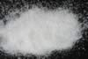

|
|
(For further information on spectroscopy, see:
http://speclab.cr.usgs.gov)
TITLE: Anorthite HS349 Plagioclase DESCRIPT
DOCUMENTATION_FORMAT: MINERAL
SAMPLE_ID: HS349
MINERAL_TYPE: Tectosilicate
MINERAL: Anorthite (Plagioclase, Ca end member, Feldspar group)
FORMULA: CaAl2Si2O8
FORMULA_HTML: CaAl2Si2O8
COLLECTION_LOCALITY: Grass Valley, California
ORIGINAL_DONOR: Hunt and Salisbury Collection
CURRENT_SAMPLE_LOCATION: USGS Denver Spectroscopy Laboratory
ULTIMATE_SAMPLE_LOCATION: USGS Denver Spectroscopy Laboratory
SAMPLE_DESCRIPTION:
The original sample and vis-nir spectrum was described in:
Hunt, G.R_, J.W. Salisbury, and C.J. Lenhoff, 1973, Visible and near-infrared spectra of minerals and rocks: VI. Additional silicates. Modern Geology, v. 4, p. 85-106.
The authors reported that they removed most of the pyroxene from the original sample, and none is obvious in the visible-NIR spectrum. There are a few dark grains in the bulk sample, but << 1%. The authors also reported that original sample contained some diopside and magnetic impurities but that the magnetic impurities were removed.
Some alteration is evident by the 2.3-µm region absorption bands in the spectrum. Roger N. Clark
IMAGE_OF_SAMPLE:

END_SAMPLE_DESCRIPTION.
XRD_ANALYSIS:
Anorthite + (medium) Chlorite + (small) 9.4 Angstrom peak + 2.778 Angstrom (Microcline?) - by Norma Vergo
Notes: the microscopic analysis shows that the impurities can't be detected, so the sample should be spectrally pure in the visible. There is a 2.3-µm band and weak 1.4 band, so some impurities do show there.
END_XRD_ANALYSIS.
COMPOSITIONAL_ANALYSIS_TYPE: None # XRF, EM(WDS), ICP(Trace), WChem
COMPOSITION_TRACE: None
COMPOSITION_DISCUSSION:
None
END_COMPOSITION_DISCUSSION.
MICROSCOPIC_EXAMINATION:
Clean, clear to frosted rectangular grains. Very pure, no visible alteration, synthetic twining. G. Swayze
avg. grain size = 280µm
Notes: XRD indicated chlorite and others present, but they can't be detected optically, so the vis spectrum should be spectrally pure. There is a 2.3-µm band and weak 1.4 band, so some impurities do show weakly in the NIR.
END_MICROSCOPIC_EXAMINATION.
SPECTROSCOPIC_DISCUSSION:
END_SPECTROSCOPIC_DISCUSSION.
SPECTRAL_PURITY: 1c2c3c4c # 1= 0.2-3, 2= 1.5-6, 3= 6-25, 4= 20-150 microns
| LIB_SPECTRA_HED: | where | Wave Range | Av_Rs_Pwr | Comment |
|---|---|---|---|---|
| LIB_SPECTRA: | splib04a r 479 | 0.2-3.0µm | 200 | g.s.= 280 µm |
| LIB_SPECTRA: | splib05a r 1099 | 0.2-3.0µm | 200 | g.s.= |
| LIB_SPECTRA: | splib06a r 2668 | g.s.= | ||
| LIB_SPECTRA: | splib06a r 2680 | g.s.= |
{kind=link}